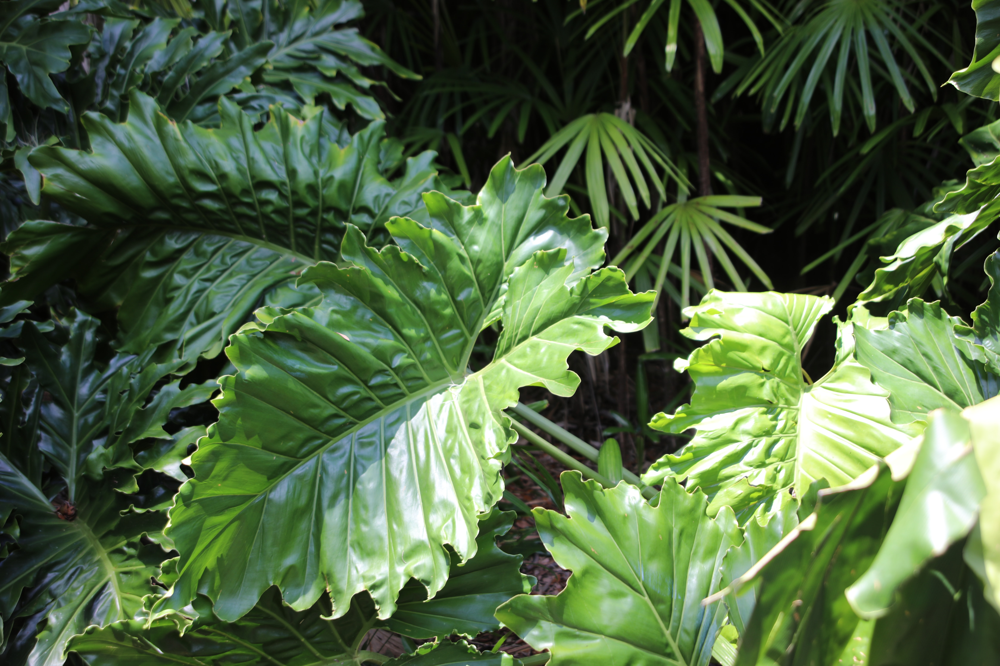
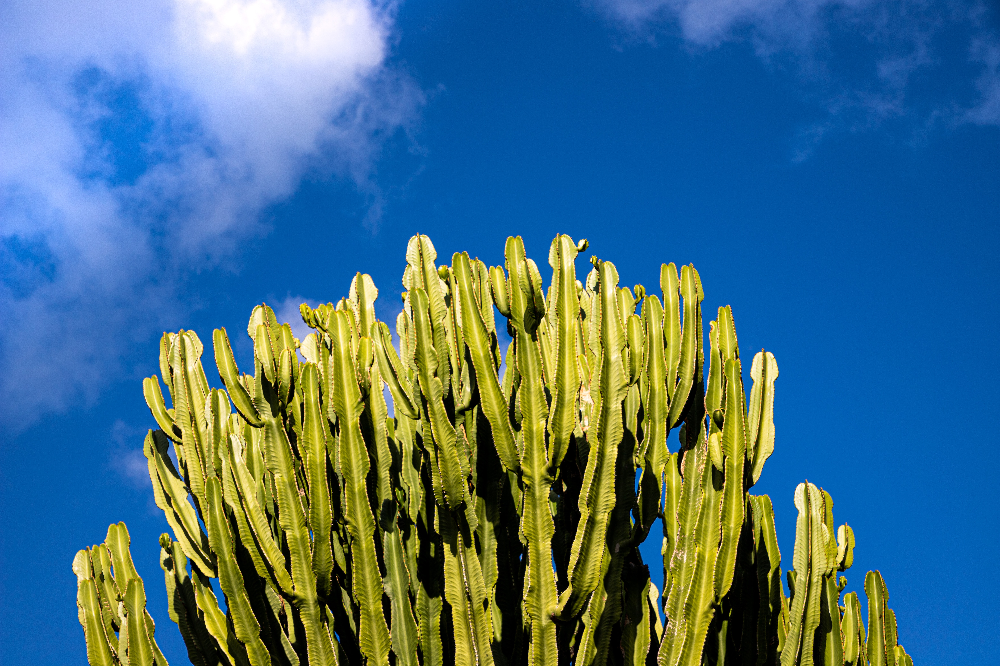
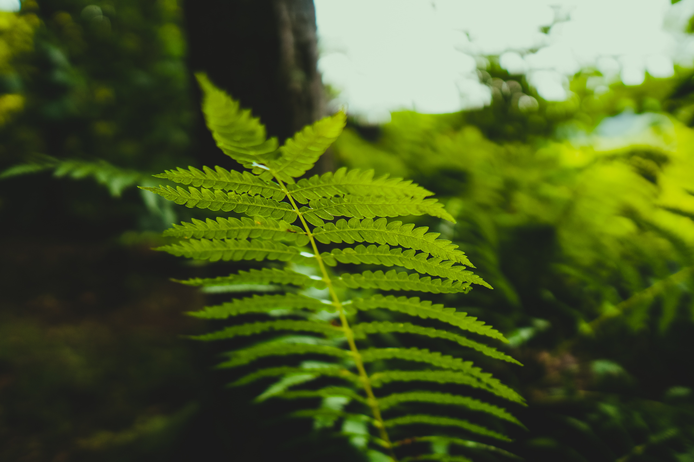
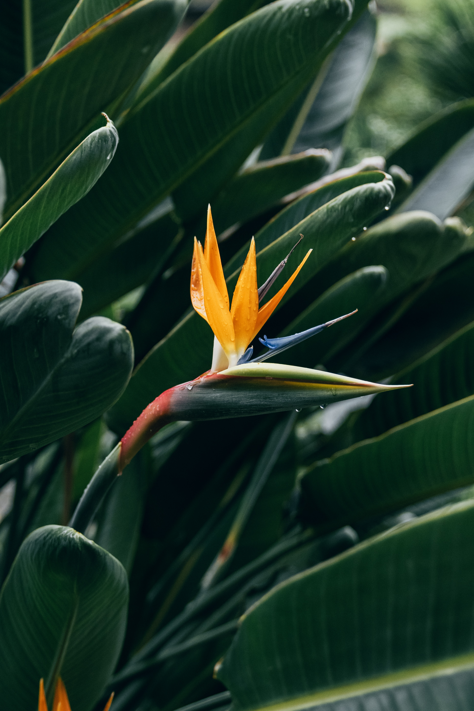

I like spending time outside, and I always wonder about the common plants I see on my walks. Below are a few of the common plants that can be found outdoors.
Cactus

Elephant Ear Palm

Cactus

Fern

Bird of Paradise
Cacti area succulent plants with a thick, fleshy stem that typically bears spines, lacks leaves, and has brilliantly colored flowers. Cacti are native to arid regions.
The palm is a 'Calidora', and is a cultivar with very large, attractive, tropical-looking leaves. The plant will grow 5-9 feet tall in a vase shape with arrow-shaped ribbed leaves that can become 6 feet long and 3 feet wide.
Ferns are plants that do not have flowers. Ferns generally reproduce by producing spores. Similar to flowering plants, ferns have roots, stems and leaves.
This bird of paradise variety has long leathery leaves reminiscent of those on the banana tree, to which it is related. The leaves are stiff clumps that sprout from the base, while the flower rests atop a stalk and is composed of orange sepals and blue petals.